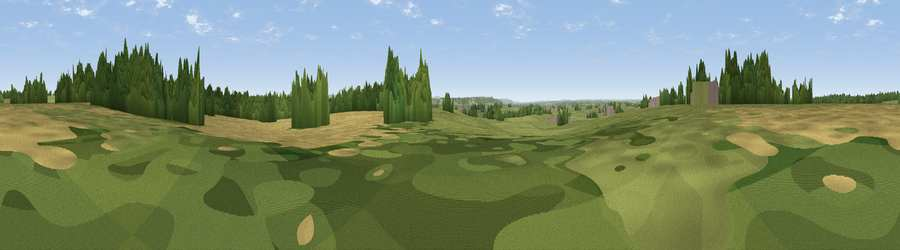

Sundays Hill
#32234 in England · top 57% of its area beats it · near BrinkworthThe view, rendered

A 360° render of this exact spot computed from the terrain model, tree cover and land cover — summer colours, afternoon light, calibrated against photographs of famous viewpoints. Real trees, hedges and buildings will differ in detail.
The panorama
Grey silhouette: terrain skyline in each direction (720 bearings, Earth curvature and refraction included). Dashed green: skyline with trees (+15 m) and buildings (+8 m) as obstacles. Blue strip: how far the ground is visible on each bearing.
Where the view opens
Wedge length = distance to the farthest visible ground on that bearing (vegetation-aware). Rings at 10, 25 and 50 km.
What fills the view
48% grassland · 30% cropland · 21% woodland · 1% built-up
Angular shares of the visible panorama (visual magnitude), not map area. Landscape diversity 0.47 (0–1 Shannon).
Key numbers
More beautiful places nearby
The staircase of upgrades: each row has a higher view potential than everything closer. Driving times are estimates from straight-line distance, calibrated against real road routing — check an actual route before setting out.
| Place | Direction | Drive | Score |
|---|---|---|---|
| Worthy Hill | NNE · 2 km | ~4 min | 43.3 |
| Viewpoint near Tockenham | SSE · 5 km | ~11 min | 53.9 |
| Viewpoint near Bradenstoke | SSW · 9 km | ~17 min | 56.4 |
| Viewpoint near Foxham | SSW · 9 km | ~18 min | 60.5 |
| Viewpoint near Broad Town | SE · 12 km | ~22 min | 66.9 |
| Viewpoint near Cherhill | SSE · 18 km | ~31 min | 71.2 |
| Viewpoint near Cherhill | S · 20 km | ~33 min | 73.6 |
| Morgan's Hill | S · 20 km | ~34 min | 74.3 |
51.57931, -1.98239 · source: osm peak · position refined by local search. Computed location — check access rights before visiting.